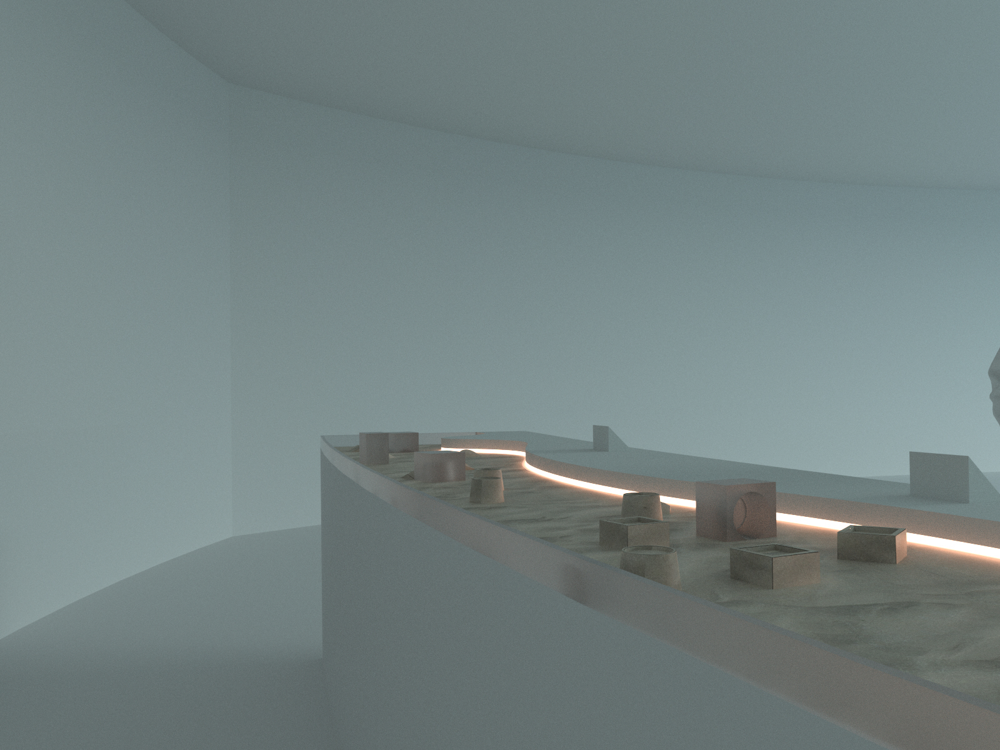

Design Concept
Pearls of the past, present, and future.
The exhibit displays the UAE’s iniatives towards achieving carbon Net-Zero through the traditional Emirati pearl diving journey.
Showing the Past
From sand dunes to skyscrapers.
A tactile sand castle table teaches visitors about the history of the UAE with different sand castle molds to visualize the country’s rapid progress.

Showing the Present
Setting sail: introducing the UAE through pearl diving.
Visitors learn about Emirati dhows and pearl diving expeditions with responsive IoT diving nets. The nets light up revealing the beautiful weaving patterns traditional divers made.


Showing the Futures
Dive into the goals of the UAE.
Find, collect, and listen to anecdotes from generations of UAE citizens about topics
relating to energy diversity , future of mobility , and resource convservation , through an
immersive pearl diving experience.

A System of Microinteractions
Translating pearl diving into a spatial experience.
This gamified experience was shaped by studying the traditional Emirati process of pearl diving. People can collect color-coded pearls and merge nets for a collaborative immersive experience.
Creating a narrative
Experience driven by cultural understanding.
This process was driven by first understanding the Emirati lens on progress, and finding a motif that properly encompasses its identity into a narrative.

Storyboarding
Building an experience from a narrative.
From the research, the values of collaboration, exploration, and ambition were essential to the Emirati culture, exemplified through pearl diving and inspiring a collaborative experience.

User testing and research
Playtesting across scales and fidelities.
I further developed the interaction from low-fi prototyping to motion tracking, revising and implementing features that would foster collaboration and be more intuitive for players.


Fabrication
Prototyping tangible interfaces to guide the experience
To create a novel way of engaging with the digital, I designed an IoT ring inspired by traditional pearl diving nets, enabling a body-immersive interaction with the space, color responsiveness, and dynamic light patterning.